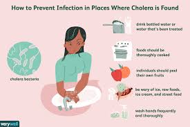
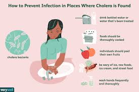

COVID 19 SYSTEM:
THE MANY RETURNING CASES OF CHOLERA
Cholera is classified as a bacterial infection of the small intestine. It is caused by certain strains of "Vibrio cholerae" and can be potentially fatal within hours of exposure. The most common symptom of Cholera is diarrhea, followed by muscle cramps and vomiting. The first Cholera outbreak was during 1817-1824, but there were many additional outbreaks in years to come. In 1973, the Cholera Outbreak was the most exacerbated in parts of Africa, South Asia, and Africa. Cholera is similar to COVID19 as hand washing is a key component in stopping the spread of the virus, as well as access to safe drinking water and having cleanly food.
 
